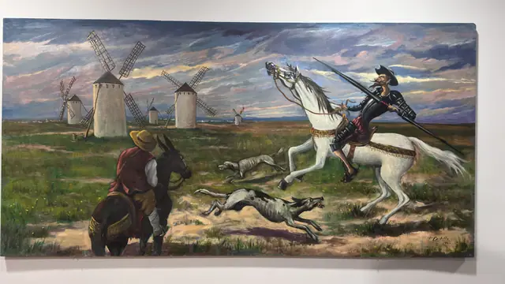

Paintings & Prints
Don Quixote Charging the Windmills, Framed
Price Upon Request

About the Item
A landscape-format painting of Don Quixote at the charge, lance lowered towards a row of windmills on the ridge, with Sancho Panza on his donkey and a pair of greyhounds running alongside. Warm earth tones with a pale sky. Medium: oil or acrylic on canvas. Condition: only one photograph available.
Details
- Medium:
- oil or acrylic on canvas
- Condition:
- Offered in the condition shown in the photographs.
- Reference Number:
- VO-86